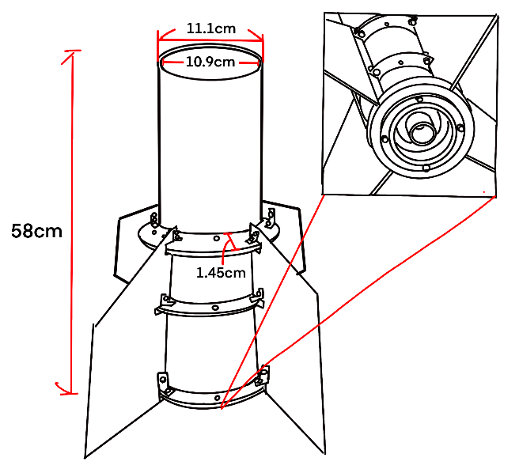
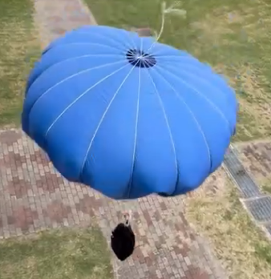
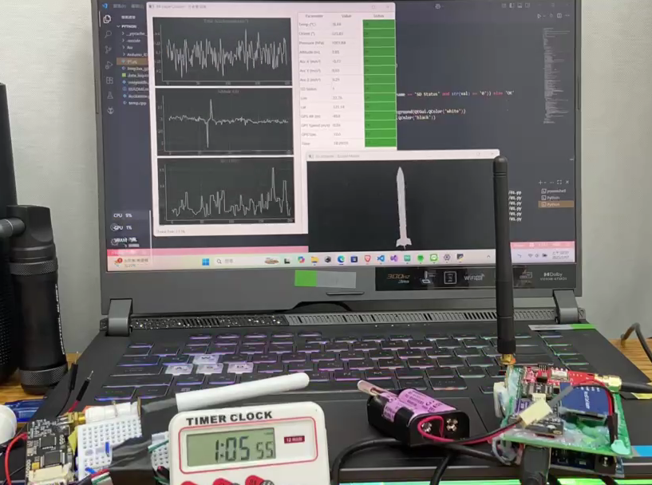
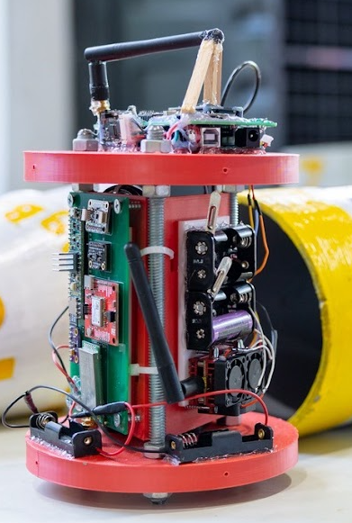
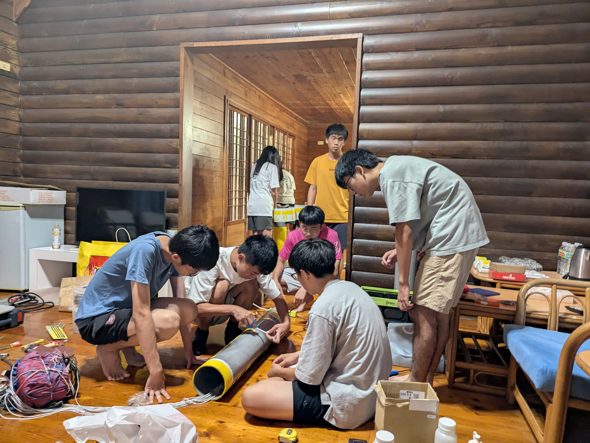
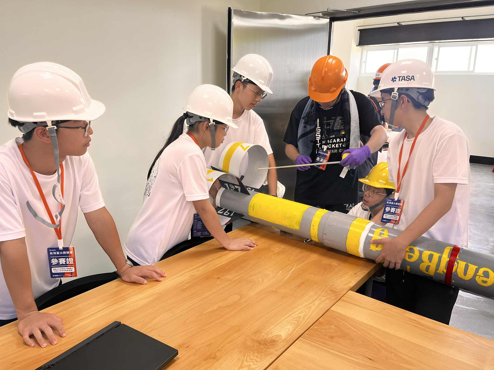
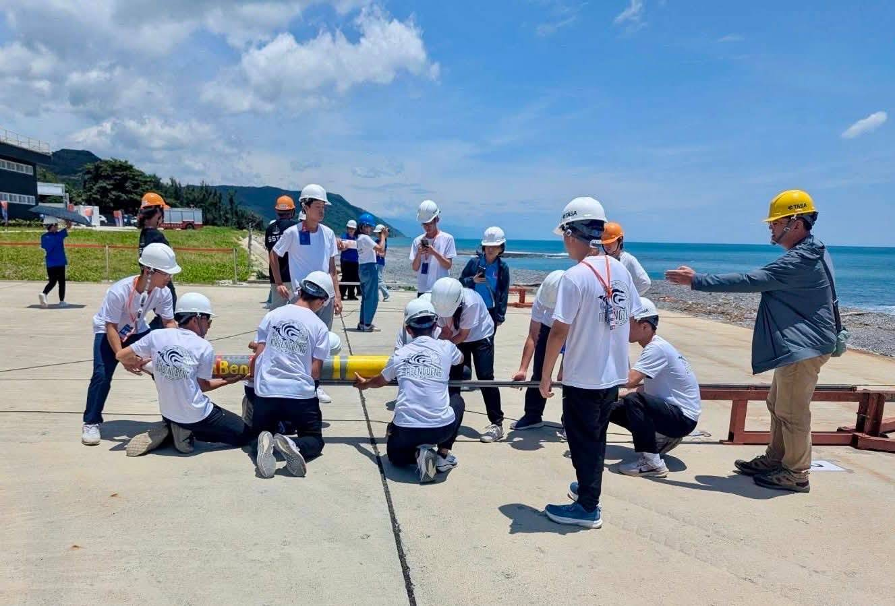
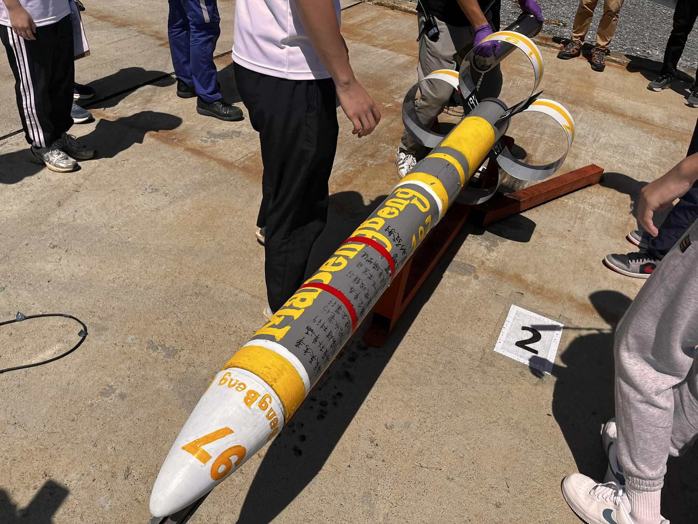

Applying aerospace systems engineering and agile methodologies to education. I bridge the gap between textbook theory and real-world hardware innovation, empowering the next generation of engineers.
Mentored high school competitive teams in the structural and avionic design of amateur rocketry. Guided students through the complexities of payload integration, custom PCB layout with Teensy microcontrollers, sensor fusion (IMU/Barometer), and telemetry data recovery.




Adopted industry-standard Agile/Scrum methodologies to lead cross-functional student teams (groups of 10-15) through full 18-month engineering lifecycles. Directly coached 60+ students across multiple elite rocket teams, translating high-level aerospace requirements into actionable assembly steps.
Enforced strict Quality Control by teaching FMEA risk assessments, comprehensive SOP writing, and rigorous documentation. This structured technician-style training directly resulted in teams reaching the National Science Fair Finals and ensured safe, reproducible hardware integrations.



